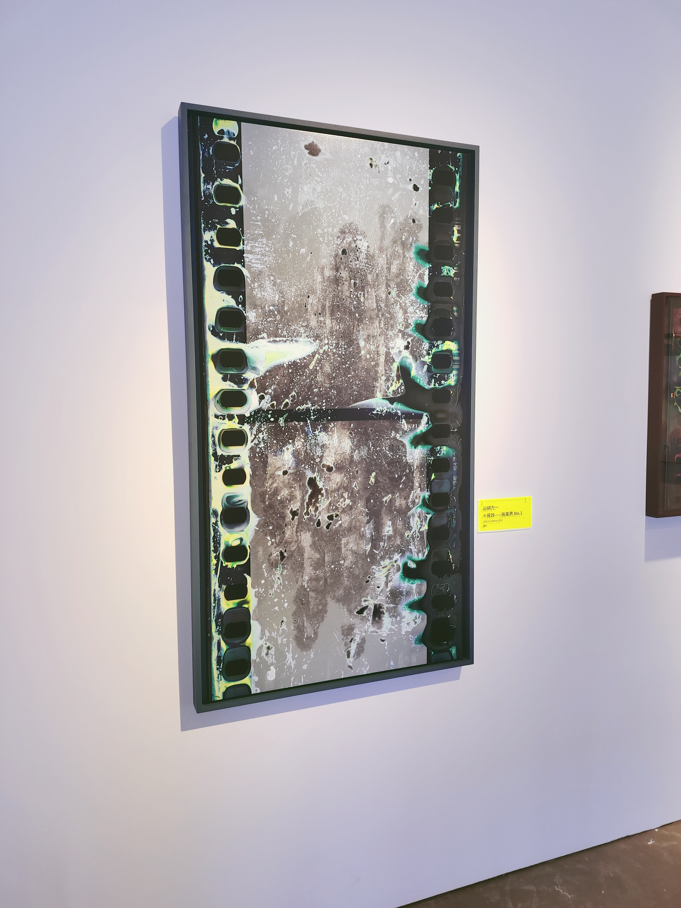

- 总是如此，身上不该有所有的热情、夏天和火焰也曾飘忽不定
一段时间情绪的衍生物
最近几天在放中秋和国庆的小长假。没法回家，索性攻略下长沙。
目前去了五一广场
橘子洲
毛泽东青年雕像
谢子龙艺术馆，李自健美术馆，去了yuki在长沙办的签售会，在排了接近六个小时的队之后成功要到了签名和合照。
也去了乐之书店,第一次知道还有试读本这种模式，非常支持书店资本化商业化，体验会好很多。
某天又重看《我的天才女友》 过后的牢骚
她，优雅，干练，厚重却又市井 （指莉拉。
不知道怎么说，最近变得沉默。
明明去了很多地方，看了一些书，却没什么开口的欲望。为什么呢。
我的生活中处处充斥着窘迫，读了一点周嘉映的《感知·理知·自我认知》，只觉感受质平白寡淡。
去了很多艺术展摄影展，不过作品的艺术性我却不敢恭维，要我大胆一点讲，我觉得都是垃圾。比战鹰还抽象的玩意。也喝了很多酒，到底有多少记不清了，不过第二天的宿醉现在想起来也让我想吐。
这里是一些画展和摄影展的记录




上课第一周
朋友打的赌又要输了，因为早起去图书馆自习室却没带笔，你要问我难道没笔不能学习吗，我说由于疏忽没带笔生发的挫败与荒唐窘迫感让我不想学。莫名奇妙的感冒喉咙巨痛巨干让我无语，难道是因为寝室的异味？
还是想要读更多的书的，不过尽量电子版吧，或者来图书馆借，我的钱实在支撑不起来了。
office还没买，java还没开始学，高数刚开始学，反函数的定义域就搞不懂，果真就新生活伊始，世界宛如史前巨蛋。
我怎么掌控我的金钱呢，是随心所欲地用凭感觉节省，还是一点一点去记录数字，标准化每天的开支？真不知道。
大学老师授课的形式让我困惑，是一种说不上来的疏离与抽象。果然只能靠b站大学。
得把安排自学日程这件事做一做计划了，
我想想啊，我想先用手机来学下摄影手法，搞清楚护肤护发流程，学一些收纳技巧，买一些收纳好物把自己的东西整的像样点，至于怎么使用生活费，目前的打算应该是严格控制食物消费然后其他的置物消费看着来随心情。
真挺喜欢写些什么东西，无论是以前用笔还是现在用键盘。
对，还想学些编程语言。其实觉得在寝室和在图书馆学没什么区别。
刚刚学了点ppt技巧感觉良好，继续来打字吧。
说不清为什么，中午睡醒之后迷迷糊，有种一切都想明白了的感觉。
这些将要陪伴我孤独一生的俗气命题，也绝对不是一个午睡的时间就能解开的。
可是我喜欢这种尝试，欣赏这种感觉。
我的macbook airpro2可能永远都不会来了。 我的iqootw莫名其妙的掉了一只。 我的腰已经开始坐久了会痛。 我还有好多快递要去取，太麻烦。 我好饿，我唯一的奢望是吃东西不用看价格。
眼睛有点酸了，别蹙眼睛，亲爱的。
我时常觉得以前的自己幼稚而聪明，我不知道这是不是一种错觉。 我不想要去“修正”所谓仪表了，我觉得现在这样已经很好。 上了大学第一次感到被束缚住（除军训外，尝到孤独的灵感与苦涩
这一天上某学科实验科时，窗外太阳一下透亮，一下消失。 我忽然想写一句诗 ：
天光忽明忽暗
命运时隐时现
最近我说的好多话都过于肉麻了，我的心绪也是，矫情，无序，也无人倾诉。
我已经记不得很多人了，他们或她们也记不得我了。之前空洞而僵硬的时间已经被生活切除了。
现在我最熟悉的朋友，或许五六年之后就是过去认识的陌生人了。
原来他们也并不懂我，他们把我模型化标签化了。我是他们人生里的谁呢。
我是想让他们理解我的吗，我不是之前说没关系吗？
一些毫无由头的话
-
西尔维斯-普拉斯说，全部的艺术，在于不要坠落。
-
看不见你，十六岁的你
-
找到了丢失的那个耳机
-
去哪里走一走吧，长沙这么大。
-
去那里，不管车程漫长，归途难待。
上传的当下
好热啊，我是真觉得没有所谓学习的氛围和意识。真心什么都不想干，那我学一会吧。
开始学clion咯，目前学习的课程每天都做点题吧，我已经休息了好长时间，生活的重心是否也搞错了勒。
被手机运营商坑了170+，让我重新审视起了对于钱面值的主观感受。
我甚至还由此跟chatgpt讨论如何面对挫折。
本来已经差不多的放弃了对父亲的敌意，结果又吃到了某种安静的冷漠。
我除了祖母祖父根本没有可以称之为“依赖”，或是“靠山”的人在。
我或许没有爱，没感受到爱，没被真的爱过。
不然两百块有什么可长久地心痛的？
我又在想要论证什么？我或许想说钱没什么可存的，用它来大胆地投资自己吧，勇气在我、责任也在我。
青年的生活怎么应该没有冲动和懊恼？夏天和火焰也曾飘忽不定。
我不是所有状态的集合，总是如此、身上不该有所有的热情。
我遇不到所有的人，甚至遇不到一个。
我在看什么呢，我为什么要羡慕他们呢。
我甚至忘了自己要写些什么，当我的真挚发言被无视的时候。
我又爱又恨的，寻求由鄙夷的，天真却有做作的，忘掉却又刻意记住的。
她在他旁边像个玩偶，他却要说她从光里走来。
我不想要胡编乱造些鸡巴话了。
都是些流水垃圾话，在这里向你道歉（如果真的有人看的话